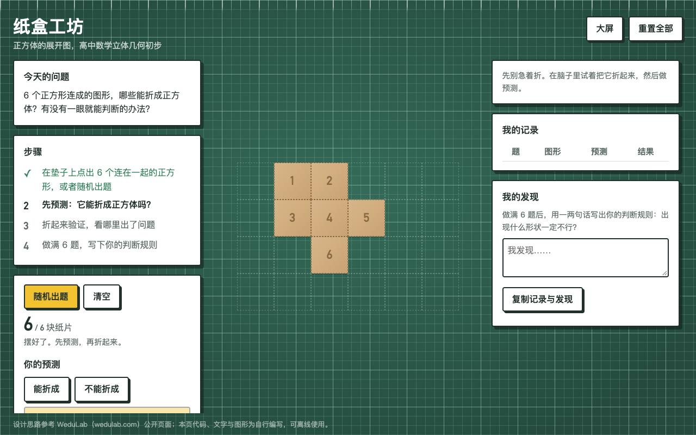
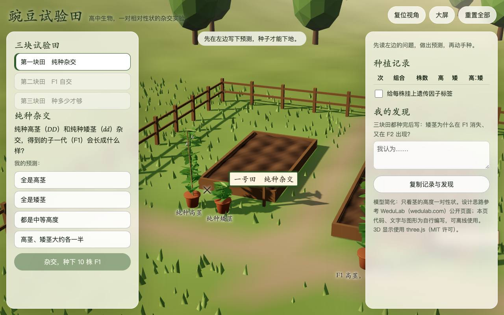
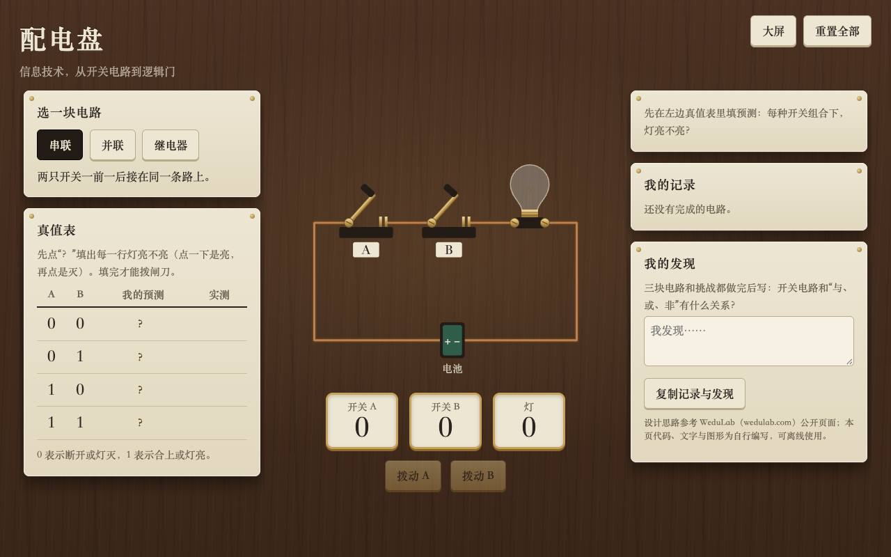
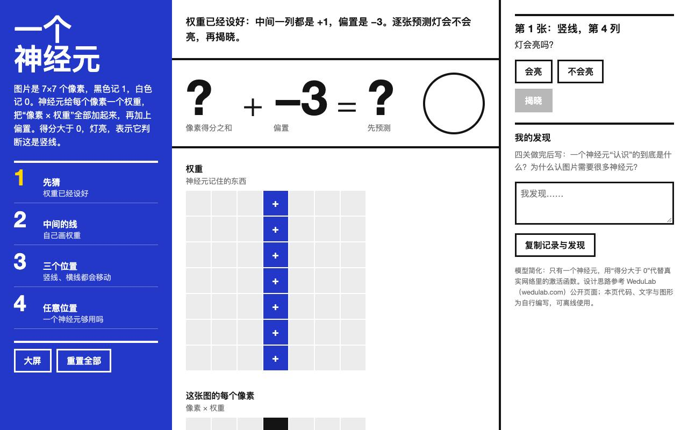
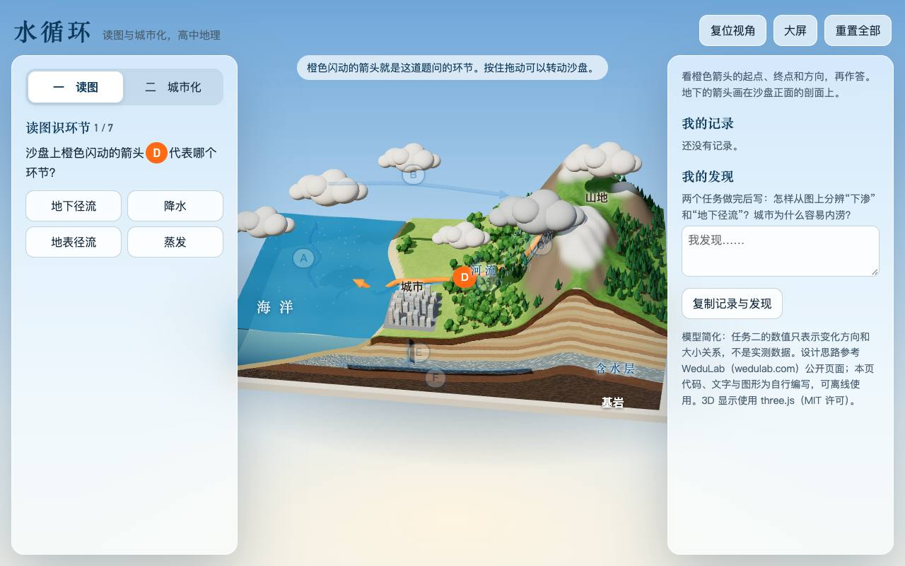
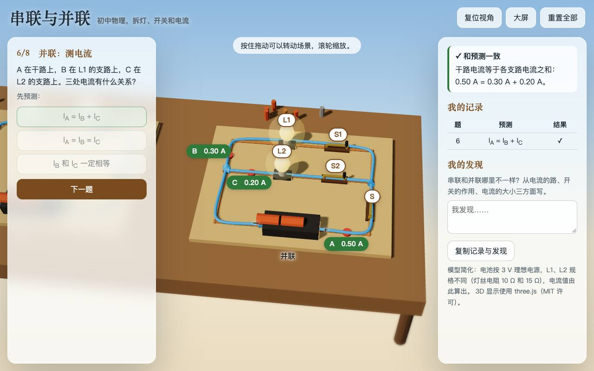
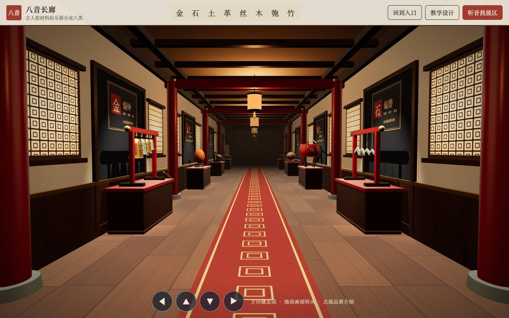

02
豌豆试验田：分离定律
- 画面
- 清晨山坡、木栅栏、三块起垄的试验田
- 学生做
- 三块田：纯种杂交 → F1 自交 → 种多少株才够；每块田先写预测再种
- 值得学
- 点任意一株看配子来源；F2 重新出现的矮茎用橙圈标出；400 株能种满一块田

03
配电盘：开关与逻辑门
- 画面
- 老式配电盘：胡桃木、黄铜导线、闸刀开关、白炽灯
- 学生做
- 串联、并联、继电器：先填真值表预测，再拨开关逐行验证
- 值得学
- 通电时导线发光流动；最后用生活情境题区分与、或、非

04
一个神经元：它真的认识竖线吗
- 画面
- 瑞士海报：大号实时公式，正权重蓝、负权重橙
- 学生做
- 先猜会不会亮，再自己画权重，最后发现一个神经元做不到
- 值得学
- 用一个反例引出“只认位置不认形状”，自然过渡到多层网络

05
水循环：读图与城市化
- 画面
- 立体沙盘：海洋、河流、城市、森林、雪山，前面切开露出含水层
- 学生做
- 读闪动的箭头说出环节名称；预测城市化对径流、下渗的影响，再拖滑块验证
- 值得学
- 每道题镜头自动转过去；答错时把学生选的环节用另一种颜色标出来对比

06
实验台：串联与并联
- 画面
- 木桌实验台，串联、并联两块电路板，闸刀开关、灯泡、电流表测量点
- 学生做
- 8 道题，都先预测再动手：拆灯、断开支路开关和干路开关、测三处电流、判断生活里的电路；做完可以自由开合开关、拆装灯泡
- 值得学
- 电流和亮度按电路算出来，不是写死的；两盏灯规格不同，破除“电流被灯用掉”“支路电流一定相等”；每个错误选项都有对应的反馈
按“3D 提示词 + 拼装器”做的，学科内容约 250 行，见技能包里的 tests/sample-reply-circuit.md。

07
八音长廊
- 画面
- 红毯展廊，金石土革丝木匏竹八个展区
- 学生做
- 先在长廊里走一遍、试听；再“听音找展区”，听一个声音走到对应展区作答
- 值得学
- 选错时指出差在“发声方式”还是“余音长短”；结束时列出最容易混淆的类别
学习一个抖音课件后重做的版本，只供学习参考，别照着它再做一个长廊。
打开课件